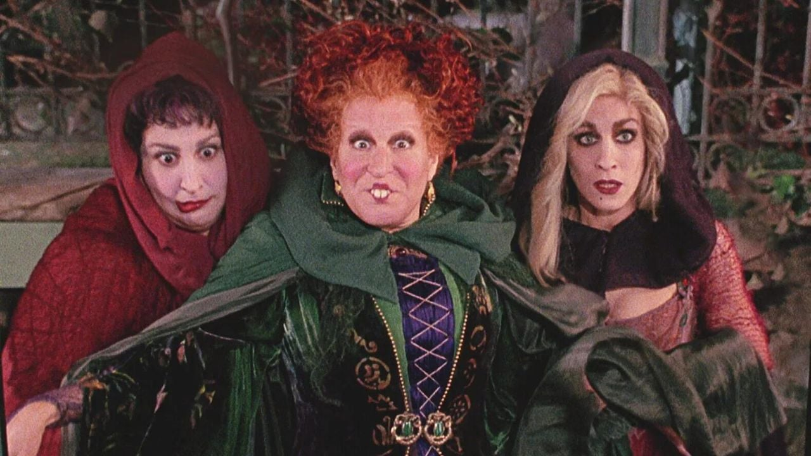

Halloween es una festividad que invita a muchos a sumergirse en su lado más oscuro y apreciar las cosas misteriosas, confusas y macabras, así como lo lúgubre y lo grotesco. Sin embargo lo que conocemos como Halloween hoy en día, se remonta a una antigua tradición europea.
El Sambain, una fiesta céltica con una antigüedad de 2,000 años, solía celebrarse después de las cosechas en honor a los espíritus de los fallecidos que, según la creencia, regresaban una vez por año con motivo de esta solemne ocasión, permaneciendo entre el reino de los vivos y el de los muertos.
Con el tiempo, se comenzó a honrar a los santos católicos en lo que se convertitía en la Noche de Todos los Santos, una festividad que evolucionó hasta convertirse en una velada para celebrar a nuestros difuntos más queridos, así como para ahuyentar a los no tan queridos en la vida y temidos aún en la muerte: los conjuradores de la magia negra y la brujería.
La fiesta de Halloween, como se conoce, ha fascinado a chicos y grandes durante décadas. Durante esta época, ver películas espeluznantes en compañía de amigos y familiares, no puede faltar, entre las que destaca Disney Hocus Pocus (1993), una cinta que se ha ganado un lugar como el clásico de clásicos de la época de Halloween.
Hocus Pocus (1993) es una película de comedia y fantasía que se centra en tres brujas, las hermanas Sanderson, resucitadas accidentalmente en Salem, Massachusetts, 300 años después de haber sido ejecutadas por practicar magia negra. Winifred, Sarah y Mary Sanderson buscan recuperar su poder eterno al absorber la fuerza vital de los niños del pueblo, mientras planean extender su maldición. Su retorno es provocado por Max Dennison, un adolescente que enciende la Black Flame Candle en una antigua casa embrujada para impresionar a su compañera de clase, Allison, sin saber las consecuencias.
Junto a su hermana menor, Dani, y su nuevo amigo Binx, un gato inmortal que solía ser un joven humano maldecido por las brujas, Max intenta detenerlas. Las brujas utilizan sus poderes para perseguir a los niños, mientras estos descubren secretos de la historia local y buscan formas de derrotarlas. Entre canciones encantadoras y hechizos, la tensión aumenta cuando las brujas están a punto de completar su siniestro plan en la noche de Halloween, una fecha ideal para desatar su magia.
Finalmente, los protagonistas logran frustrar los planes de las hermanas Sanderson, atrapándolas en el amanecer, que las convierte en polvo. Aunque Binx pierde su forma felina, su alma queda liberada y se reencuentra con su hermana en el más allá. La película concluye mientras los ciudadanos de Salem regresan a la normalidad tras una noche inolvidable.
Hocus Pocus 2 (2022) retoma la historia de las hermanas Sanderson casi tres décadas después de los eventos de la primera película. La trama sigue a Becca y Izzy, dos adolescentes de Salem que accidentalmente resucitan a las brujas al encender otra Black Flame Candle durante una noche de Halloween. Sin embargo, esta vez las hermanas Sanderson están más decididas que nunca a consolidar su poder y vengarse de Salem, utilizando un hechizo que podría hacerlas invencibles, el machica maxima
Mientras las brujas intentan adentrarse a un mundo lleno de nuevas tecnologías y desafíos, Becca, Izzy y su amiga Cassie deben unir fuerzas para detenerlas. En el proceso, las chicas descubren que Becca tiene un vínculo especial con la magia, lo que les da una ventaja inesperada. La película explora temas de amistad y el poder de la unidad, mientras las adolescentes enfrentan a las Sanderson, utilizando la historia local y sus conocimientos para enfrentarlas.
El clímax de la película presenta un giro emocional cuando Winifred, al completar el hechizo para convertirse en la bruja más poderosa, se da cuenta de que pierde a sus hermanas en el proceso. Este momento lleva a una conclusión más emotiva que en la primera película, con Winifred eligiendo reunirse con Sarah y Mary en el más allá. Becca abraza su conexión con la magia, dejando la puerta abierta para nuevas aventuras. Hocus Pocus 2 combina un mensaje conmovedor sobre el amor fraternal, siendo una secuela que honra el espíritu del original.
Actualmente, Hocus Pocus 3 no ha sido lanzada oficialmente, aunque Disney confirmó en 2023 que una tercera película está en desarrollo tras el éxito de Hocus Pocus 2. Aunque los detalles sobre la trama son desconocidos, los fans esperan que la historia continúe explorando el legado de las hermanas Sanderson y su conexión con la magia en Salem. Se especula que la película podría centrarse en Becca, Izzy y Cassie, quienes ahora tienen un vínculo más fuerte con la magia.

Es posible que las hermanas Sanderson regresen nuevamente, ya sea como antagonistas o en un papel diferente que permita explorar otras facetas de sus personajes. Los temas de familia, amistad y el poder de la magia podrían seguir siendo centrales en la narrativa, al igual que el equilibrio entre lo cómico y lo emocional. También podría haber nuevos villanos o elementos mágicos que amplíen el universo de las películas.
La casa de la película está inspirada en la arquitectura del siglo XVII.
¿Cuál bruja usó cuál túnica? Los disfraces de las brujas protagonistas se diseñaron con la intención de romper con las tradicionales túnicas negras que hasta entonces habían usado las brujas en las películas. Cada uno de los vestidos, las capas y los peinados refleja la personalidad de la hermana Sanderson que lo luce.
Otra curiosidad interesante es que la locación principal del filme, Salem, Massachusetts, es famosa por los juicios de brujas reales ocurridos en el siglo XVII, lo que añade un nivel de autenticidad a las historias. Sin embargo, muchas de las escenas del pueblo en la primera película fueron filmadas en Marblehead, una ciudad vecina.
Thackery Binx, el gato que habla, fue el primer personaje animado parcialmente por computadora en aparecer en una película. Seis gatos animatrónicos y ocho gatos de verdad ayudaron a interpretar el papel y el mínimo hechizado terminó de cobrar vida mediante el uso de tecnología CBI de vanguardia.